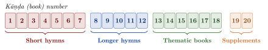
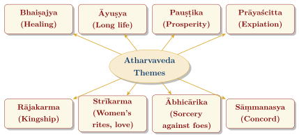

Chapter 5: The Atharvaveda: The Veda of Charms, Healing and Speculation¶
Invocatory Verse
janaṃ bibhratī bahudhā vivācasaṃ
nānādharmāṇaṃ pṛthivī yathaukasam
The Earth, bearing people of many languages
and many customs, according to their dwelling-places.
— Atharvaveda (Pṛthivī Sūkta) 12.1.45
5.1 Introduction to the Atharvaveda¶
The Atharvaveda takes its name from Atharvan, a legendary priest associated with the discovery of fire. Its older name, Atharvāṅirasaḥ, joins the names of two families of fire-priests: the atharvans, associated with beneficent, healing charms, and the aṅgirases, associated with hostile ones.
Whereas the other three Vedas serve the great śrauta rituals, the Atharvaveda is concerned largely with the needs of daily life. It contains charms to cure disease and drive away demons, to secure long life, prosperity, love and offspring, to win the favour of assemblies and the success of kings, to harm rivals and enemies, and to expiate faults, together with a number of important speculative hymns. Its language is somewhat later than that of the Ṛgveda, though some of its material may be very old, and its hymns belong to the period of the “mantra language”, c. 1200–900 BCE (Table 1.2) (Witzel 2003; Gonda 1975).
Scholars often describe much of this material as “magical”. The term is not meant as an insult: the charms are a precious record of the hopes, fears and healing practices of ordinary people in Vedic India, and of the ritual specialists who served them. They should be read for what they are—prayers and rites—and not as a source of medical treatment.
Key Features of the Atharvaveda (Śaunaka Recension)
| Hymns: | about 730 |
| Verses: | about 6,000 |
| Books (kāṇḍas): | 20 |
| Extant recensions: | Śaunaka and Paippalāda |
| Ritual manual: | Kauśika Sūtra |
| Key themes: | Healing, protection, prosperity, love, kingship, sorcery, speculation |
5.2 Structure and Organisation¶
The Śaunaka Saṃhitā is organised into 20 books on a mainly formal plan (Figure 5.1):
-
Books 1–7: short hymns, grouped largely by the number of verses per hymn;
-
Books 8–12: longer hymns on varied subjects, including the Pṛthivī Sūkta (12.1);
-
Books 13–18: books each devoted to a single theme—Rohita (13), the wedding (14), the Vrātya (15), protective formulas (16–17) and the funeral (18);
-
Books 19–20: later supplements; Book 20 consists largely of Ṛgvedic hymns to Indra used in the Soma ritual.

5.3 The Two Recensions: Śaunaka and Paippalāda¶
-
Śaunaka Saṃhitā — the better-known recension, on which most editions and translations are based (e.g. the translation by W. D. Whitney, 1905).
-
Paippalāda Saṃhitā — a distinct recension in 20 books, with much material not found in the Śaunaka. It was long known only from a single, corrupt birch-bark manuscript from Kashmir, discovered in the 1870s. In the 1950s Durgamohan Bhattacharyya found that Brahmins in Odisha still possessed palm-leaf manuscripts and a living tradition of the Paippalāda, and editions based on the Odia manuscripts followed: Dipak Bhattacharya’s edition (Kolkata, in several volumes from 1997) and critical editions of individual books by Arlo Griffiths, Alexander Lubotsky and others, which are still in progress. The Paippalāda text is now regarded as essential for the history of the Atharvaveda.
5.4 Thematic Content of the Atharvaveda¶
The Kauśika Sūtra, the ritual manual of the Śaunaka school, groups the charms by purpose. The main categories are (Figure 5.2):

5.4.1 Healing Charms (Bhaiṣajya)¶
The Atharvaveda is the earliest Indian source for ideas about disease and healing. Its charms address fever (takman), jaundice, cough, consumption (yakṣma), wounds, fractures, worms, skin disease, poisoning, snakebite and madness. Disease is mostly understood as the work of demons, sorcerers, or angry gods, or as the result of sin; the charms drive it out with spells, amulets, herbs, water and fire, and often “send” it away to distant peoples (AV 5.22 sends fever to the Gandhāris, Mūjavants, Aṅgas and Magadhas). Many plants are invoked, sometimes as divine beings, and some of them reappear in classical Āyurveda.
Health and Safety Note
The Atharvavedic charms are historical religious texts. They record what ancient people believed and did; they are not evidence that any mantra, amulet or plant mentioned in them cures disease. Nothing in this chapter should be used as medical advice. Snakebite, poisoning, fever and wounds require prompt modern medical treatment.
5.4.2 The Pṛthivī Sūkta (Hymn to the Earth)¶
The Pṛthivī Sūkta (AV 12.1), a hymn of 63 verses, addresses the Earth as mother and sustainer of all beings. It opens by naming the powers that uphold her:
Pṛthivī Sūkta — AV 12.1.1
satyaṃ bṛhad ṛtam ugraṃ dīkṣā tapo brahma yajñaḥ pṛthivīṃ dhārayanti
Great truth, mighty order, consecration, heat, prayer and sacrifice uphold the Earth.
— Atharvaveda 12.1.1
The hymn goes on to praise the Earth’s mountains, plains, waters, plants and creatures, the peoples “of many languages and many customs” who live on her (12.1.45), and the sacrifices performed on her, and it includes the famous line mātā bhūmiḥ putro ahaṃ pṛthivyāḥ (12.1.12). One verse asks that whatever is dug from her may quickly grow again (12.1.35). Another describes her as the place of food and of the ploughman’s crops:
yasyāṃ samudra uta sindhur āpo
yasyām annaṃ kṛṣṭayaḥ saṃbabhūvuḥ
yasyām idaṃ jinvati prāṇad ejat
sā no bhūmiḥ pūrvapeye dadhātu
She on whom are the sea, the river and the waters, on whom food and the ploughing peoples came into being, on whom all that breathes and moves is quickened—may that Earth set us in the first place. — AV 12.1.3
Modern environmental thinkers often cite the hymn as an early expression of reverence for the Earth, and it can fairly be read that way. It is also a prayer for prosperity, for victory over enemies and for the security of the speaker’s people, and it should not be read as a treatise on ecology in the modern sense.
5.4.3 Kingship (Rājakarma)¶
A group of hymns serves the king: to restore an exiled king (AV 3.3), to install a king chosen by the people (AV 3.4, where the clans “choose” him for kingship), to consecrate him (AV 4.8), and to strengthen him against rivals (AV 4.22). These hymns are an important source for early Vedic political ideas (see Section 5.6).
5.4.4 Speculative Hymns¶
The Atharvaveda also contains several hymns of real philosophical interest:
-
Skambha Sūktas (AV 10.7–8) — on Skambha, the “Pillar” or “Support” that holds heaven, earth and atmosphere apart and into which the whole world has entered (10.7.35). The hymn asks in which of his limbs tapas, ṛta, faith and truth are established, and identifies Skambha with the supreme brahman.
-
Prāṇa Sūkta (AV 11.4) — praising breath (prāṇa) as the lord of all that lives.
-
Ucchiṣṭa Sūkta (AV 11.7) — on the “remainder” of the sacrifice as the ground of all things.
-
Kāla Sūktas (AV 19.53–54) — on Time as the power that generated the sun, the year and all beings.
-
Rohita hymns (AV 13) — on the “Red One”, the rising sun, as creator.
-
Vrātya hymns (AV 15) — on the vrātya, a member of a group of wandering, non-orthodox Aryans, here exalted as a cosmic figure. Some scholars see in the vrātyas a link with later ascetic or warrior brotherhoods; their interpretation remains uncertain.
These hymns bring together the main cosmic principles—tapas, ṛta, faith, truth and brahman—and relate them to a single ground, anticipating the search for unity in the Upaniṣads.
5.5 Disease and Healing in the Atharvaveda¶
5.5.1 Ideas about the Causes of Disease¶
-
Demons and sorcery: many diseases are attributed to demonic beings (rakṣas, piśāca) or to hostile witchcraft, to be expelled by counter-charms;
-
Worms: some diseases are attributed to worms (krimi), which are described and cursed in detail (AV 2.31–32; 5.23);
-
Wind, water and weather: a few passages speak of illnesses “born of the cloud” or “born of the wind” (e.g. AV 1.12.3), but there is no developed theory of bodily humours—the three-doṣa theory belongs to the classical medical texts of the early centuries CE;
-
Sin and divine anger: disease can also be the punishment of Varuṇa or the result of offences, to be removed by expiation.
5.5.2 Plants (Oṣadhi)¶
Several hymns praise healing plants collectively (e.g. AV 8.7) or individually. Some can be identified with reasonable confidence; many cannot (Table 5.1).
| Vedic Name | Likely Identification | AV Reference | Use in the Charm |
|---|---|---|---|
| Kuṣṭha | Saussurea (costus root) | 5.4; 19.39 | Against fever (takman) |
| Apamārga | Achyranthes aspera | 4.17–19 | To wipe away sorcery and disease |
| Guggulu | Commiphora resin | 19.38 | Fumigant against demons and disease |
| Rohiṇī | Unidentified plant | 4.12 | To make broken bones and torn flesh grow together |
| Lākṣā | Lac | 5.5 | Applied to wounds |
| Aśvattha | Ficus religiosa | 3.6 | Amulet against enemies |
5.5.3 The Body¶
The Atharvaveda shows considerable knowledge of the parts of the body, as one would expect from a culture that butchered animals for sacrifice. A charm to drive out consumption (yakṣma), shared with the Ṛgveda (RV 10.163 = AV 2.33), names the parts of the body one by one—eyes, nostrils, ears, chin, head, brain, tongue, neck, bones, joints—from which the disease is to be drawn out. Hymn AV 10.2 asks who fashioned each part of the human body, from the heels upward, and answers that it was brahman. These lists are an important early source for Sanskrit anatomical vocabulary.
5.6 The Atharvaveda and Political Thought¶
5.6.1 Assemblies: Sabhā and Samiti¶
The Atharvaveda refers to two kinds of assembly, the sabhā and the samiti, whose exact functions are debated. A charm to prevail in debate opens:
Assembly Hymn — AV 7.12.1
sabhā ca mā samitiś cāvatāṃ prajāpater duhitarau saṃvidāne
May the Sabhā and the Samiti, the two daughters of Prajāpati,
in harmony, help me.
— Atharvaveda 7.12.1
Such passages show that public speech and persuasion mattered in Vedic political life. They do not show democracy in the modern sense: the assemblies seem to have been gatherings of men of the clan, or of its leading men.
5.6.2 Kinds of Sovereignty¶
Later Vedic texts distinguish grades of rule. The best-known list comes not from the Atharvaveda but from the Aitareya Brāhmaṇa (8.15), which names, among others, sāmrājya, bhaujya, svārājya, vairājya, pārameṣṭhya, rājya, māhārājya and ādhipatya. The precise meanings of these terms are uncertain; some may have been associated with particular regions.
5.6.3 War and the King’s Fortune¶
Other hymns are war charms, to inspire one’s own army and terrify the enemy (e.g. AV 3.19; 11.9–10), and there is a merchant’s prayer for profitable trade (AV 3.15). Together they show that the Atharvaveda addressed the concerns of kings, warriors and traders as well as of households.
5.7 The Atharvaveda and Āyurveda¶
Classical Āyurveda (Chapter 10) often presents itself as an Upaveda of the Atharvaveda; the Suśruta Saṃhitā, for instance, calls it a limb (upāṅga) of the Atharvaveda. There is real continuity of vocabulary, of named diseases such as fever and consumption, and of some plants. But classical Āyurveda, with its theory of the three doṣas, its rational therapeutics and its surgery, is a new system that took shape around the beginning of the Common Era, partly in dialogue with Buddhist and other non-Vedic traditions of healing. The Atharvaveda is one of its sources, not its blueprint (Table 5.2).
| Atharvavedic Topic | AV Reference | Later Counterpart |
|---|---|---|
| Plants (oṣadhi) | 8.7 | Dravyaguṇa (materia medica) |
| Fever (takman) | 1.25; 5.22; 6.20 | Jvara (fever) chapters |
| Jaundice and heart pain | 1.22 | Kāmalā, hṛdroga |
| Worms | 2.31–32; 5.23 | Kṛmi (worms) |
| Madness | 6.111 | Unmāda (insanity) |
| Long life (āyus) | 3.11 | Rasāyana (rejuvenation) |
5.8 The Atharvaveda and Daily Life¶
The Atharvaveda gives us an unusually vivid picture of everyday concerns. It contains:
-
Wedding and love charms — including the wedding hymns of Book 14 and charms to win a lover or a husband, or to be rid of a rival wife.
-
Charms for children and the household — for conception, safe childbirth and the protection of infants.
-
Agricultural charms — for good harvests and rain, and against pests and drought.
-
House-building charms — for the consecration of a new house (e.g. AV 3.12).
-
Charms for concord — for harmony in family and community (e.g. AV 3.30).
-
Hostile charms — curses against rivals, enemies and sorcerers.
5.9 The Atharvaveda’s Path to Canonical Status¶
The Atharvaveda had to struggle for recognition as a Veda equal to the other three. Many early texts speak only of the “threefold knowledge” (trayī vidyā)—Ṛgveda, Yajurveda and Sāmaveda—and the law books sometimes treat sorcery with suspicion. The Atharvavedic schools claimed that the fourth priest of the śrauta ritual, the silent overseer called the brahman, should be an Atharvavedin, and their Brāhmaṇa, the Gopatha, argues the point at length. The Atharvaveda’s links with royal ritual and with the king’s chaplain (purohita) also raised its standing, and by the time of the Upaniṣads and the Mahābhārata it was generally accepted as the fourth Veda.
5.10 The Associated Upaniṣads¶
-
Muṇḍaka Upaniṣad — distinguishes “higher knowledge” (parā vidyā), by which the imperishable is known, from “lower knowledge” (aparā vidyā), which includes the four Vedas and the six Vedāṅgas (1.1.4–5).
-
Praśna Upaniṣad — six students put six questions to the sage Pippalāda.
-
Māṇḍūkya Upaniṣad — the shortest of the principal Upaniṣads (twelve prose sentences), analysing the syllable Oṃ (Figure 5.3) and the states of waking, dream, deep sleep and the “fourth” (turīya). It is generally regarded as one of the later principal Upaniṣads.

5.11 Summary¶
The Atharvaveda is the Veda closest to everyday life, and the one whose standing was longest in doubt. Its charms record what the hymns of the solemn ritual leave out—illness, rivalry, love, the fortunes of a household or a king—and the specialists who served those needs; its speculative hymns show that the same collection could also reach for a single ground of the world. The struggle of its schools for recognition as a fourth Veda, won through their claim to the office of the brahman priest and to the king’s household, is a reminder that the canon itself had a history. Its hymn to the Earth, with its vision of a land bearing “people of many languages and many customs”, remains one of the most quoted passages in Vedic literature.
Closing Verse
mātā bhūmiḥ putro ahaṃ pṛthivyāḥ
The Earth is my mother; I am the son of the Earth.
— Atharvaveda 12.1.12